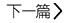

ADOBE QUANJIAFU 在线下载
2015年1月20日
来源：逻辑思维
作者：刘义
 阅读：127
阅读：127
阅读：127
| 文件名称 | ADOBE QUANJIAFU 在线下载 |
| 发布时间 | 2015年1月20日 |
| 下载 | |
| 文件描述 | XXXXXXXXXXXXXXXXXXXXXXXXXXXXXXXXXXXXXXXXXX XXXXXXXXXXXXXXXXXXXXXXXXXXXXXXXXXXXXXXXXXXXXXXX |
